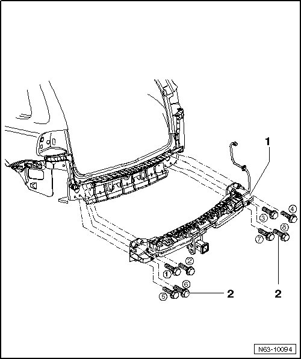

Tow Hitch Bolting Sequence, USA
Rear Bumper
Tow Hitch Bolting Sequence, USA
CAUTION!
The specified bolting sequence must be strictly maintained.

- The illustration shows the sequence in which bolts - 2 - 1 through 8 of tow hitch - 1 - are to be tightened.